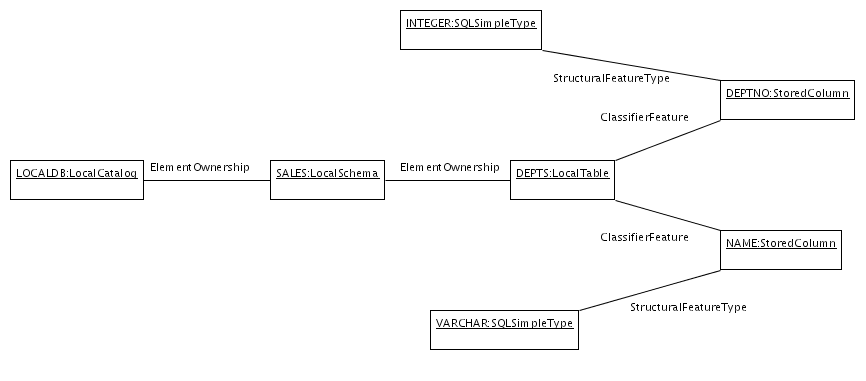
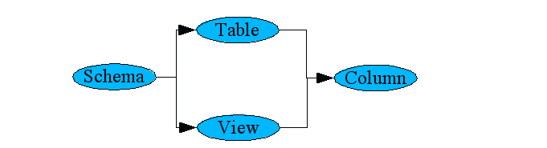
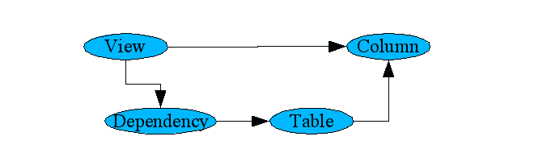
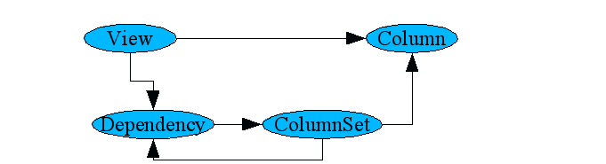

This document presents the syntax and semantics of LURQL along with examples of how to use it. It assumes familiarity with UML.
As sample metadata to be retrieved (instantiating the above metamodel), we use the standard Farrago example schema. Here's a UML object diagram for the partial definition of one of the tables (including its containers, columns, and their datatypes):

select *
from class Table
where name = 'DEPTS'
then (
follow association ClassifierFeature
);
EXECUTION RESULT:
LocalTable: DEPTS
StoredColumn: DEPTNO
StoredColumn: NAME
select/from/where
structure, but the resemblance is only superficial. LURQL queries
have a mapping to the directed graph structure of the metamodel of
interest. In this case, we are starting from the extent of all
tables, filtering down to just those tables whose name matches the
string literal 'DEPTS', and then following the association
ClassifierFeature to pick up the corresponding columns. The result
set is a collection of JMI objects (one table and two columns); we
only display the object types and names in this document, but the
actual return value is a reference to the live object in the
repository (from which all of its attributes and links are
accessible). Note that the actual type returned for DEPTS
(LocalTable) is a subtype of the requested CWM type (Table); LURQL
automatically includes all subtypes in its search.
Unlike SQL, the * in the select clause does
not project attributes; instead, it projects entire nodes of the query
graph. For example, if we only wanted to retrieve the columns:
select c
from class Table as t where name='DEPTS' then (
follow association ClassifierFeature as c
);
EXECUTION RESULT:
StoredColumn: DEPTNO
StoredColumn: NAME
as clause can be used to apply a label to each
from or follow clause. In this case the
label "t" is unused and is only specified as a syntax example. For
follow clauses, the label is applied to the set of classes reached via
the association (or associations) traversed (StoredColumn for c).
Follow clauses can be chained to arbitrary depth. For example, to retrieve the schema and table containing column EMPNO:
select s, t
from class Column where name='EMPNO' then (
follow association ClassifierFeature as t then (
follow association ElementOwnership backward as s
)
);
EXECUTION RESULT:
LocalSchema: SALES
LocalTable: EMPS
LocalTable: TEMPS
View: EMPSVIEW
View: TEMPSVIEW
Note that the query above specified the backward
qualifier on the traversal of association ElementOwnership, which is
what takes us from table to containing schema. The reason is that the
ElementOwnership association also links tables to other objects such
as constraints and dependencies. LURQL imposes direction on the
underlying metamodel as follows:
select s, t
from class Column where name='EMPNO' then (
follow association ClassifierFeature as t then (
follow association ElementOwnership as s
)
);
EXECUTION RESULT:
Dependency: EMPS$DEP
Dependency: EMPSVIEW$DEP
Dependency: TEMPS$DEP
Dependency: TEMPSVIEW$DEP
LocalSchema: SALES
LocalTable: EMPS
LocalTable: TEMPS
PrimaryKeyConstraint: SYS$PRIMARY_KEY
PrimaryKeyConstraint: SYS$PRIMARY_KEY
UniqueKeyConstraint: SYS$UNIQUE_KEY$EMPID
View: EMPSVIEW
View: TEMPSVIEW
follow clause.
It is also possible to explicitly specify more than one
follow branching out from the same origin along different
associations. For example, suppose we'd like to find the datatype and
containing tables of a column:
select t, d
from class Column where name='CITY' then (
follow destination class Table as t
union
follow destination class SQLDataType as d
);
EXECUTION RESULT:
LocalTable: EMPS
LocalTable: TEMPS
SQLSimpleType: VARCHAR
union is used because the final results are
based on the two paths combined (with duplicates removed as always).
Intersect and other set operations are not currently supported. The
follow qualifier used here is based on the
class (Table or SQLDataType) reached rather than the
association. The destination qualifier means filter
based on the class reached rather than the starting class (the
origin qualifier provides this alternative).
The example above shows diverging paths; it is also possible for paths to converge and then carry on together. Suppose we'd like to query the union of the columns of view EMPSVIEW and table DEPTS in schema SALES:
select c
from class Schema where name='SALES' then (
follow destination class Table where name='DEPTS'
union
follow destination class View where name='EMPSVIEW'
) gather then (
follow destination class Column as c
);
EXECUTION RESULT:
StoredColumn: DEPTNO
StoredColumn: NAME
ViewColumn: EMPNO
ViewColumn: NAME
gather clause combines the leaves of the unioned
paths and then applies the last then clause to that
combination. Schematically:

In some cases, a query may need to contain excursions; the
gather with parent variation can be used for this
purpose. For example, suppose we want to query the columns of a view
together with all columns of directly underlying tables:
select c, t
from class View where name='JOINVIEW' then (
follow association ElementOwnership destination class Dependency then (
follow destination end supplier destination class Table as t
)
) gather with parent then (
follow association ClassifierFeature as c
);
EXECUTION RESULT:
LocalTable: DEPTS
LocalTable: EMPS
StoredColumn: AGE
StoredColumn: CITY
StoredColumn: DEPTNO
StoredColumn: DEPTNO
StoredColumn: EMPID
StoredColumn: EMPNO
StoredColumn: GENDER
StoredColumn: MANAGER
StoredColumn: NAME
StoredColumn: NAME
StoredColumn: PUBLIC_KEY
StoredColumn: SLACKER
ViewColumn: DNAME
ViewColumn: ENAME
follow chain defines the view dependency
traversal (and demonstrates association filtering via end names). It
is an "excursion" in the sense that regardless of what it finds, we
also want to include the original view (the "parent") as a source for
the final follow after the gather with
parent. Here's the corresponding query graph:

select *
from class Table where name='TEMPS' then (
recursively (
follow composite backward
)
);
EXECUTION RESULT:
LocalCatalog: LOCALDB
LocalSchema: SALES
LocalTable: TEMPS
Recursion may contain follow chains (or diverging chains as long as they all eventually converge back to a single endpoint) and may be followed by more non-recursive query processing. Here's the previous view dependency example, this time capable of handling arbitrary depth (the results are not shown since the example views only have one level):
select c, t
from class View where name='JOINVIEW' then (
recursively (
follow association ElementOwnership destination class Dependency then (
follow destination end supplier destination class ColumnSet as t
)
)
) gather with parent then (
follow association ClassifierFeature as c
);

exists clause for filtering based on the
existence of related objects.
Suppose we'd like to find all schemas which contain tables named 'EMPS':
select s
from class Schema as s where exists (
follow association ElementOwnership destination class Table
where name='EMPS'
);
EXECUTION RESULT:
LocalSchema: SALES
select t
from class Table as t where exists d in (
follow association ClassifierFeature then (
follow destination class SQLDataType as d
where name='BOOLEAN'
)
);
EXECUTION RESULT:
LocalTable: EMPS
LocalTable: TEMPS
select dt
from class Column where mofId in
[select "mofId" from sys_cwm."Relational"."Column" where "name" like '%NO']
then (
follow destination class SQLDataType as dt
);
EXECUTION RESULT:
SQLSimpleType: INTEGER
In this case, the SQL query is against the catalog views derived from the same metadata being queried by LURQL. The "mofId" column is a special internal column representing the JMI object ID.
<lurql-query> ::=
select <select-list>
from <root>
select-list ::=
'*'
|
<id> [, <id> ... ]
<root> ::=
<simple-root>
|
<compound-root>
<simple-root> ::=
class <id> [ as <id> ]
[ <where-clause> ]
[ then <path-spec> ]
<compound-root> ::=
'(' <root> [ union <root> ... ] ')'
[ gather then <path-spec> ]
<where-clause> ::=
where <filter> [ and <filter> ... ]
<filter> ::=
<id> '=' <value>
|
<id> matches <single-quoted-string-regular-expression>
|
<id> in '(' <value> [, <value> ... ] ')'
|
<id> in '[' <sql-query-text> ']'
|
<id> in <dynamic-param>
|
exists [ <select-list> in ] <path-spec>
<value> ::=
<literal>
| <dynamic-param>
<dynamic-param> ::=
'?' <id>
<path-spec> ::=
<path-spec-without-gather>
[ gather [ with parent ] then <path-spec> ]
<path-spec-without-gather> ::=
'(' <path-branch> [ union <path-branch> ... ] ')'
<path-branch> ::=
<follow>
|
<recursion>
<follow> ::=
follow [ <association-filter> ... ]
[ as <id> ]
[ <where-clause> ]
[ then <path-spec> ]
<association-filter> ::=
( origin | destination ) ( end | class ) <id>
| composite
| noncomposite
| association <id>
| forward
| backward
<recursion> ::=
recursively ( <path-spec-without-gather> | '(' <path-spec> ')' )
[ then <path-spec> ]
<id> ::=
<double-quoted-id>
| <unquoted-id>
<literal> ::=
<single-quoted-string>
In 2005, the code was contributed under GPL licensing to The Eigenbase Project via LucidEra, a startup which has acquired the rights to the Broadbase code. Besides rechristening as LURQL, major changes from BERQL include: